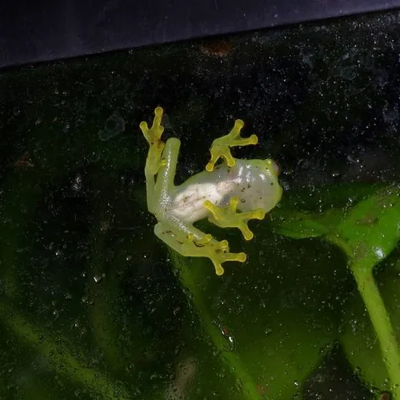

两栖动物 · 动物界
玻璃蛙 Hyalinobatrachium fleischmanni

中美洲雨林中的小型树蛙，腹部皮肤半透明，可以透过皮肤看到内脏，卵产在溪流上方的叶片上，是雨林中的“透明精灵”。
- 分类
- 门脊索动物门纲两栖纲目无尾目科玻璃蛙科属玻璃蛙属
- 栖息环境
- 中美洲热带雨林溪流附近的植被与叶片
- 地理分布
- 墨西哥南部、中美洲至哥伦比亚西北部的雨林
- 保护级别
- IUCN 无危（LC）；非中国原产，在中国无保护级别
物种志
玻璃蛙体长仅 2–3 厘米，身体小巧，头部圆钝，眼睛大而突出，趾端有吸盘，适合攀爬；它最特别的是腹部的皮肤几乎透明，可以看到心脏、肝脏和消化道在体内跳动和蠕动，背部则呈淡绿或黄绿色，与叶片颜色相近。
它分布于墨西哥南部至巴拿马的热带雨林，栖息在溪流附近的植被上，夜间捕食小型昆虫和蜘蛛。繁殖期雄蛙在叶片上鸣叫，雌蛙把卵产在悬于溪流上方的叶片背面，雄蛙会守在卵旁，保持卵的湿润并防御天敌；卵孵化后蝌蚪直接掉入下方的溪水中继续发育。它对水质和湿度变化非常敏感，被视为热带雨林环境质量的指示物种，目前整体被评估为无危，但栖息地破坏仍威胁着部分种群。
形态与习性
- 食性小型昆虫和蜘蛛
- 体长2–3 cm
- 寿命约 5–10 年
- 繁殖卵生，卵产于溪流上方叶片，蝌蚪孵化后落入水中
- 活动节律夜行性
- 特点腹部皮肤半透明，可见内脏器官
趣味知识
- 玻璃蛙的腹部皮肤几乎透明，隔着皮肤能看到心脏跳动。
- 它把卵产在溪流上方的叶片背面，雄蛙守在旁边保持卵的湿润。
- 玻璃蛙对水质和湿度非常敏感，是热带雨林环境的指示物种。